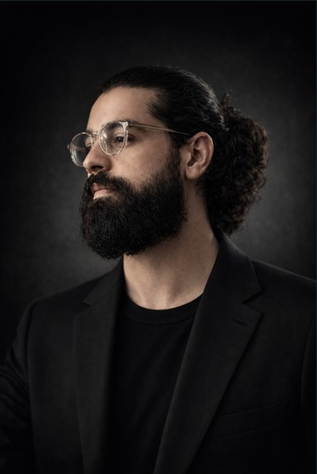

Tunis · Lille · New York
Haroun Ayari
The body is not an instrument. It is the intelligence itself.
Tunisia · France · International

About
A life lived entirely through the body
Haroun Ayari did not choose dance. Dance chose him at the age of twelve, in the training spaces and open streets of Tunisia, where he first encountered capoeira, breakdance, and hip-hop. By nineteen, that instinct had deepened into something more demanding: contemporary dance, with all its rigour, vulnerability, and philosophical weight.
He trained at the École Supérieure de Musique et de Danse (ESMD) and earned a Bachelor's degree in Dance Education from the Université de Lille, where his research examined the space between the body and consciousness. These years did not simply give him technique. They gave him a question that has driven everything since: what does the body know that the mind has not yet learned to hear?
His choreographic work spans the sacred and the intimate. From El Hadhra, a spiritual gathering rooted in Sufi tradition guiding performers toward wajd, to collaborative duets born from DanceMotion USA in New York, to solos that excavate the silence beneath identity. Each piece is a different answer to the same question.
In 2026, he formalised twenty years of embodied research into the Ayari Method of Perceptual Architecture, registered at INPI France. The Method is not a technique. It is a complete framework for understanding how human beings inhabit themselves and the world through movement. It is taught through three layers: the Living Archive, Perceptual Architecture, and the Complete Journey, and documented across the Ayari Trilogy: The Living Archive, The Illiterate Body, and Revealing Yourself Through Dance.
Haroun Ayari is not a dancer who also writes. He is an artist for whom the body, the page, and the studio are three faces of the same inquiry. His work is for anyone who has ever felt that movement carries a meaning language cannot reach.